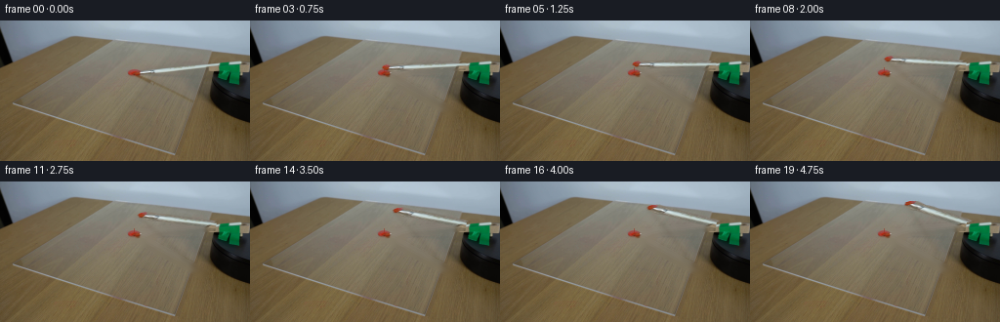
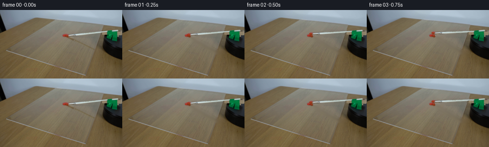
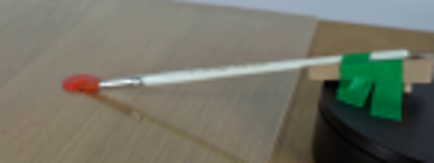
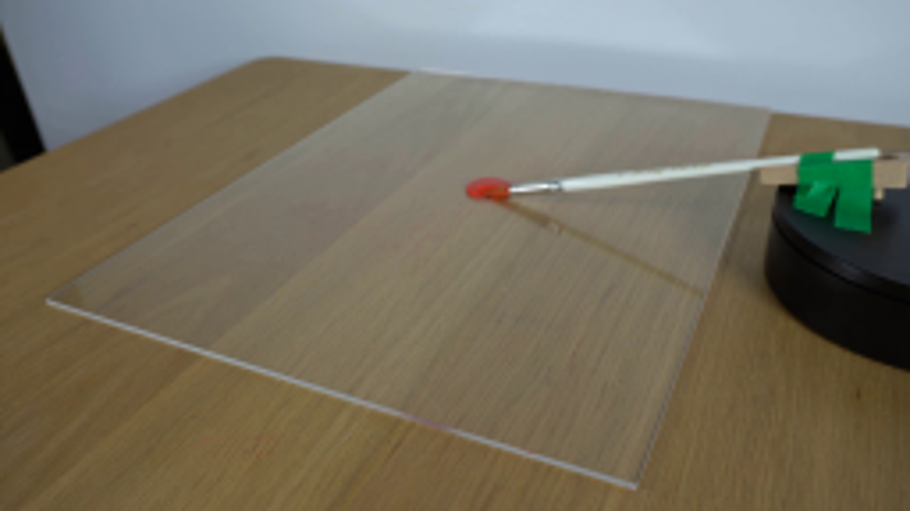
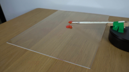
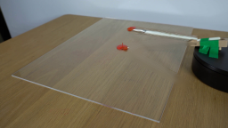
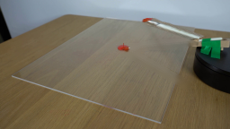

CODING AGENTS AS PIXEL WORLD MODELS
traex/GPT-5.6-Sol · 0132
点击播放 · 原生 RGB 像素
逐轮保存的候选
回放视频、检查图与代码变化。
每份候选均可单独播放。实际图片检查记录在下方工具轨迹中。
候选 01播放与检查图
点击播放 · 原生 RGB 像素


展开代码变化
--- 上一保存版本
+++ 本次保存版本
@@ -0,0 +1,121 @@
+from pathlib import Path
+import cv2
+import numpy as np
+from PIL import Image
+import artifact_io
+
+# Analytic image-space animation of the real brush already present in the supplied frame.
+ROOT = Path(__file__).resolve().parent
+src = np.asarray(Image.open(ROOT / "first_frame.png").convert("RGB"), dtype=np.uint8)
+H, W = src.shape[:2]
+S = 4
+
+def aa_polygon(points):
+ m = np.zeros((H*S, W*S), np.uint8)
+ p = np.rint(np.asarray(points, np.float32)*S).astype(np.int32)
+ cv2.fillPoly(m, [p], 255, lineType=cv2.LINE_AA)
+ return cv2.resize(m, (W,H), interpolation=cv2.INTER_AREA)
+
+# The narrow silhouette follows the paint-loaded bristles, ferrule, and white handle.
+brush_poly = [(136.7,52.1),(141,49.5),(154,49.0),(159,47.7),
+ (221,42.1),(227,42.8),(227,48.7),(160,55.4),
+ (154,57.0),(141,56.1),(136.6,54.3)]
+brush_a = aa_polygon(brush_poly)
+# Slightly soften only the cutout edge; the interior remains opaque.
+brush_a = cv2.GaussianBlur(brush_a, (3,3), .34)
+brush_a[brush_a > 235] = 255
+brush_rgb = src.copy()
+
+# Produce a clean plate beneath the original brush and its elevated diagonal shadow.
+inpaint = np.zeros((H,W), np.uint8)
+cv2.fillPoly(inpaint, [np.asarray(brush_poly, np.int32)], 255)
+# Original soft shadow cast by the elevated handle.
+cv2.line(inpaint, (139,56), (207,94), 255, 6, cv2.LINE_AA)
+inpaint = cv2.dilate(inpaint, np.ones((3,3),np.uint8), iterations=1)
+plate_bgr = cv2.inpaint(cv2.cvtColor(src, cv2.COLOR_RGB2BGR), inpaint, 4.0, cv2.INPAINT_TELEA)
+plate = cv2.cvtColor(plate_bgr, cv2.COLOR_BGR2RGB)
+
+# Restore the stationary dollop, including its natural highlight and irregular edge.
+yy, xx = np.mgrid[:H,:W]
+dollop_a = np.clip(1.0 - (((xx-136.7)/8.0)**2 + ((yy-54.1)/5.2)**2), 0, 1)
+dollop_a = np.clip(dollop_a*2.2, 0, 1)[...,None]
+plate = np.clip(src*dollop_a + plate*(1-dollop_a), 0, 255).astype(np.uint8)
+
+# The brush hinges beneath the green fixture. Vertical dimensions are compressed in
+# the table plane to preserve the photograph's perspective as it turns clockwise.
+pivot = np.array([226.0, 47.5], np.float32)
+vertical_scale = 0.43
+
+def matrix_for(theta):
+ c, s = np.cos(theta), np.sin(theta)
+ # p' = pivot + S R S^-1 (p-pivot), in screen coordinates (+y down).
+ A = np.array([[c, -s/vertical_scale],
+ [vertical_scale*s, c]], np.float32)
+ t = pivot - A @ pivot
+ return np.column_stack([A,t]).astype(np.float32)
+
+def warp_premul(theta):
+ M = matrix_for(theta)
+ a = brush_a.astype(np.float32)/255.0
+ premul = brush_rgb.astype(np.float32)*a[...,None]
+ wp = cv2.warpAffine(premul, M, (W,H), flags=cv2.INTER_CUBIC,
+ borderMode=cv2.BORDER_CONSTANT, borderValue=0)
+ wa = cv2.warpAffine(a, M, (W,H), flags=cv2.INTER_CUBIC,
+ borderMode=cv2.BORDER_CONSTANT, borderValue=0)
+ wa = np.clip(wa,0,1)
+ rgb = wp / np.maximum(wa[...,None], 1e-4)
+ return np.clip(rgb,0,255), wa
+
+def point_transform(pt, theta):
+ M = matrix_for(theta)
+ q = M[:,:2] @ np.asarray(pt,np.float32) + M[:,2]
+ return q
+
+def add_shadow(frame, theta):
+ # Tip touches the sheet while the raised handle projects down-left from the light.
+ tip = point_transform((138.0,54.0), theta)
+ high = point_transform((222.5,46.7), theta)
+ far = high + np.array([-23.0,43.0],np.float32)
+ mask = np.zeros((H*S,W*S),np.uint8)
+ cv2.line(mask, tuple(np.rint((tip+np.array([1.0,2.0]))*S).astype(int)),
+ tuple(np.rint(far*S).astype(int)), 180, 2*S, cv2.LINE_AA)
+ # taper with a second, weaker halo
+ mask = cv2.GaussianBlur(mask, (0,0), 2.1*S)
+ mask = cv2.resize(mask,(W,H),interpolation=cv2.INTER_AREA).astype(np.float32)/255.0
+ mask *= .25
+ tint = np.array([62,49,32],np.float32)
+ return np.clip(frame*(1-mask[...,None]) + tint*mask[...,None],0,255)
+
+def add_paint_trace(frame, theta):
+ # A tiny curved residue where the loaded bristles leave the dollop.
+ if theta <= 0: return frame
+ hi = np.ascontiguousarray(frame.copy())
+ overlay = hi.copy()
+ upto = min(theta, np.deg2rad(9.0))
+ ts = np.linspace(0, upto, max(2, int(np.degrees(upto))+1))
+ pts = np.array([point_transform((138.0,54.0), t) for t in ts])
+ pts = np.rint(pts).astype(np.int32)
+ cv2.polylines(overlay,[pts],False,(153,43,28),1,cv2.LINE_AA)
+ # Keep it subtle and translucent on the acrylic.
+ return cv2.addWeighted(overlay,.48,hi,.52,0).astype(np.float32)
+
+frames = [src.copy()]
+# Constant angular velocity: a clearly readable but physically calm 52 degree sweep.
+for i in range(1,20):
+ theta = np.deg2rad(52.0) * (i/19.0)
+ f = plate.astype(np.float32)
+ f = add_shadow(f, theta)
+ f = add_paint_trace(f, theta)
+ obj, a = warp_premul(theta)
+ f = obj*a[...,None] + f*(1-a[...,None])
+ # Preserve the green fixture as foreground over the pivot where the handle is held.
+ # Only its central taped flap needs restoring; the moving shaft emerges naturally below it.
+ fixture = aa_polygon([(222,42),(246,42),(246,65),(225,62),(220,53)])
+ fa = (fixture.astype(np.float32)/255.0)[...,None]
+ f = src.astype(np.float32)*fa + f*(1-fa)
+ frames.append(np.clip(f,0,255).astype(np.uint8))
+
+frames = np.stack(frames,axis=0)
+assert frames.shape == (20,144,256,3) and frames.dtype == np.uint8
+assert np.array_equal(frames[0],src)
+artifact_io.save(frames, ROOT)
可观测工具轨迹
实际执行的命令与返回图片。
命令 1exit 0
/bin/bash -lc "cat prompt.txt && printf '\\n---RULES---\\n' && cat GENERATION_RULES.md"
命令 2exit 0
/bin/bash -lc "find . -maxdepth 2 -type f -printf '%p %s bytes\\n' | sort"
命令 3exit 0
/bin/bash -lc "python3 - <<'PY'
from PIL import Image
im=Image.open('first_frame.png')
print(im.size, im.mode)
PY
which ffmpeg || true
ffmpeg -version 2>/dev/null | head -2 || true"命令 4exit 0
/bin/bash -lc "python3 - <<'PY' for m in ['cv2','numpy','PIL','scipy']: try: x=__import__(m);print(m,'ok',getattr(x,'__version__','')) except Exception as e:print(m,e) PY"
命令 5exit 0
/bin/bash -lc "python3 - <<'PY'
from PIL import Image
im=Image.open('first_frame.png')
im.crop((110,25,256,80)).resize((876,330)).save('.tmp/crop.png')
PY"命令 6exit 0
/bin/bash -lc "python3 - <<'PY'
from PIL import Image
import numpy as np
im=np.array(Image.open('first_frame.png'))
# print brightest/dark/red pixels regions
for name,cond in [
('red',(im[:,:,0]>im[:,:,1]*1.35)&(im[:,:,0]>im[:,:,2]*1.25)&(im[:,:,0]>90)),
('white',(im[:,:,0]>145)&(im[:,:,1]>145)&(im[:,:,2]>135))]:
y,x=np.where(cond)
print(name, x.min(),x.max(),y.min(),y.max(),len(x))
# in target region
q=(x>110)&(x<240)&(y>30)&(y<70)
print('target',x[q].min(),x[q].max(),y[q].min(),y[q].max(),q.sum())
PY"命令 7exit 0
/bin/bash -lc 'cat artifact_io.py'
命令 8exit 0
/bin/bash -lc "python3 - <<'PY'
from PIL import Image
im=Image.open('first_frame.png')
im.resize((1024,576)).save('.tmp/full4x.png')
PY"命令 9exit 0
/bin/bash -lc "cat > generate.py <<'PY'
from pathlib import Path
import cv2
import numpy as np
from PIL import Image
import artifact_io
# Analytic image-space animation of the real brush already present in the supplied frame.
ROOT = Path(__file__).resolve().parent
src = np.asarray(Image.open(ROOT / \"first_frame.png\").convert(\"RGB\"), dtype=np.uint8)
H, W = src.shape[:2]
S = 4
def aa_polygon(points):
m = np.zeros((H*S, W*S), np.uint8)
p = np.rint(np.asarray(points, np.float32)*S).astype(np.int32)
cv2.fillPoly(m, [p], 255, lineType=cv2.LINE_AA)
return cv2.resize(m, (W,H), interpolation=cv2.INTER_AREA)
# The narrow silhouette follows the paint-loaded bristles, ferrule, and white handle.
brush_poly = [(136.7,52.1),(141,49.5),(154,49.0),(159,47.7),
(221,42.1),(227,42.8),(227,48.7),(160,55.4),
(154,57.0),(141,56.1),(136.6,54.3)]
brush_a = aa_polygon(brush_poly)
# Slightly soften only the cutout edge; the interior remains opaque.
brush_a = cv2.GaussianBlur(brush_a, (3,3), .34)
brush_a[brush_a > 235] = 255
brush_rgb = src.copy()
# Produce a clean plate beneath the original brush and its elevated diagonal shadow.
inpaint = np.zeros((H,W), np.uint8)
cv2.fillPoly(inpaint, [np.asarray(brush_poly, np.int32)], 255)
# Original soft shadow cast by the elevated handle.
cv2.line(inpaint, (139,56), (207,94), 255, 6, cv2.LINE_AA)
inpaint = cv2.dilate(inpaint, np.ones((3,3),np.uint8), iterations=1)
plate_bgr = cv2.inpaint(cv2.cvtColor(src, cv2.COLOR_RGB2BGR), inpaint, 4.0, cv2.INPAINT_TELEA)
plate = cv2.cvtColor(plate_bgr, cv2.COLOR_BGR2RGB)
# Restore the stationary dollop, including its natural highlight and irregular edge.
yy, xx = np.mgrid[:H,:W]
dollop_a = np.clip(1.0 - (((xx-136.7)/8.0)**2 + ((yy-54.1)/5.2)**2), 0, 1)
dollop_a = np.clip(dollop_a*2.2, 0, 1)[...,None]
plate = np.clip(src*dollop_a + plate*(1-dollop_a), 0, 255).astype(np.uint8)
# The brush hinges beneath the green fixture. Vertical dimensions are compressed in
# the table plane to preserve the photograph's perspective as it turns clockwise.
pivot = np.array([226.0, 47.5], np.float32)
vertical_scale = 0.43
def matrix_for(theta):
c, s = np.cos(theta), np.sin(theta)
# p' = pivot + S R S"'^-1 (p-pivot), in screen coordinates (+y down).
A = np.array([[c, -s/vertical_scale],
[vertical_scale*s, c]], np.float32)
t = pivot - A @ pivot
return np.column_stack([A,t]).astype(np.float32)
def warp_premul(theta):
M = matrix_for(theta)
a = brush_a.astype(np.float32)/255.0
premul = brush_rgb.astype(np.float32)*a[...,None]
wp = cv2.warpAffine(premul, M, (W,H), flags=cv2.INTER_CUBIC,
borderMode=cv2.BORDER_CONSTANT, borderValue=0)
wa = cv2.warpAffine(a, M, (W,H), flags=cv2.INTER_CUBIC,
borderMode=cv2.BORDER_CONSTANT, borderValue=0)
wa = np.clip(wa,0,1)
rgb = wp / np.maximum(wa[...,None], 1e-4)
return np.clip(rgb,0,255), wa
def point_transform(pt, theta):
M = matrix_for(theta)
q = M[:,:2] @ np.asarray(pt,np.float32) + M[:,2]
return q
def add_shadow(frame, theta):
# Tip touches the sheet while the raised handle projects down-left from the light.
tip = point_transform((138.0,54.0), theta)
high = point_transform((222.5,46.7), theta)
far = high + np.array([-23.0,43.0],np.float32)
mask = np.zeros((H*S,W*S),np.uint8)
cv2.line(mask, tuple(np.rint((tip+np.array([1.0,2.0]))*S).astype(int)),
tuple(np.rint(far*S).astype(int)), 180, 2*S, cv2.LINE_AA)
# taper with a second, weaker halo
mask = cv2.GaussianBlur(mask, (0,0), 2.1*S)
mask = cv2.resize(mask,(W,H),interpolation=cv2.INTER_AREA).astype(np.float32)/255.0
mask *= .25
tint = np.array([62,49,32],np.float32)
return np.clip(frame*(1-mask[...,None]) + tint*mask[...,None],0,255)
def add_paint_trace(frame, theta):
# A tiny curved residue where the loaded bristles leave the dollop.
if theta <= 0: return frame
hi = np.ascontiguousarray(frame.copy())
overlay = hi.copy()
upto = min(theta, np.deg2rad(9.0))
ts = np.linspace(0, upto, max(2, int(np.degrees(upto))+1))
pts = np.array([point_transform((138.0,54.0), t) for t in ts])
pts = np.rint(pts).astype(np.int32)
cv2.polylines(overlay,[pts],False,(153,43,28),1,cv2.LINE_AA)
# Keep it subtle and translucent on the acrylic.
return cv2.addWeighted(overlay,.48,hi,.52,0).astype(np.float32)
frames = [src.copy()]
# Constant angular velocity: a clearly readable but physically calm 52 degree sweep.
for i in range(1,20):
theta = np.deg2rad(52.0) * (i/19.0)
f = plate.astype(np.float32)
f = add_shadow(f, theta)
f = add_paint_trace(f, theta)
obj, a = warp_premul(theta)
f = obj*a[...,None] + f*(1-a[...,None])
# Preserve the green fixture as foreground over the pivot where the handle is held.
# Only its central taped flap needs restoring; the moving shaft emerges naturally below it.
fixture = aa_polygon([(222,42),(246,42),(246,65),(225,62),(220,53)])
fa = (fixture.astype(np.float32)/255.0)[...,None]
f = src.astype(np.float32)*fa + f*(1-fa)
frames.append(np.clip(f,0,255).astype(np.uint8))
frames = np.stack(frames,axis=0)
assert frames.shape == (20,144,256,3) and frames.dtype == np.uint8
assert np.array_equal(frames[0],src)
artifact_io.save(frames, ROOT)
PY
python3 generate.py
python3 - <<'"'PY'
import numpy as np
from PIL import Image
im=np.array(Image.open('first_frame.png'))
z=np.load('pixels.npz')['pixels']
print('npz',z.shape,'frame0 exact',np.array_equal(((z[:,:,0]>>16)&255).astype('u1'),im[:,:,0]))
PY"视觉工具实际返回图片 1

视觉工具实际返回图片 2

视觉工具实际返回图片 3

视觉工具实际返回图片 4

视觉工具实际返回图片 5

视觉工具实际返回图片 6

保存候选 1 份；完成命令 9 次；可验证图片返回 6 张。原始 API 响应与完整日志保留在本地。